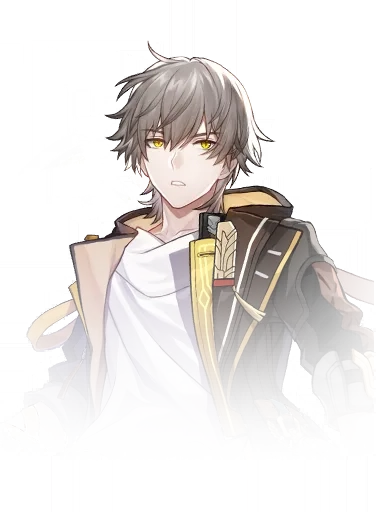
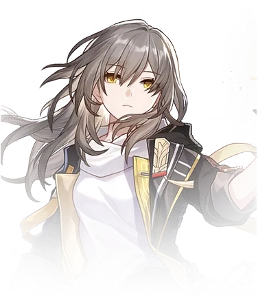
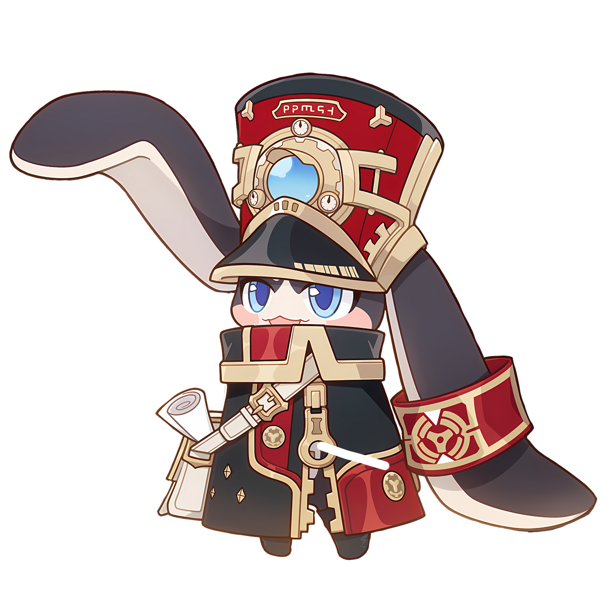

Honkai: Star Rail es un RPG de estrategia de HoYoverse (llamado miHoYo en China), anunciado a finales de 2021 para Microsoft Windows, iOS y Android. Como la cuarta entrega principal de la serie Honkai, el juego se sitúa en el universo de Honkai Impact 3rd, siguiendo las aventuras de un grupo de personajes que viajan a bordo de un tren espacial.Su lanzamiento oficial fue el 26 de abril de 2023 para Windows y dispositivos móviles.

Trailer 2.6
¡Bienvenidos!

¡Bienvenidos, Trailblazers, al universo de Honkai: Star Rail! 🌌✨
Es un honor tenerlos a bordo del Expreso Astral, listos para explorar los rincones más lejanos de la galaxia y enfrentarse a los misterios del universo. Aquí, cada viaje está lleno de sorpresas, alianzas épicas y desafiantes batallas contra fuerzas oscuras.
Como nuevos exploradores, hay mucho por descubrir: desde el poder de tus personajes hasta las asombrosas historias que te esperan en cada planeta. No dudes en experimentar, aprender y, sobre todo, divertirte. ¡Recuerda que en este vasto universo no viajas solo! La comunidad y tus compañeros de tripulación estarán a tu lado para apoyarte, al igual que esta pagina de guias para que puedas mejorar a tu manera.
Prepara tus armas, afina tu estrategia y adéntrate en el tren hacia lo desconocido. ¡Tu aventura en Honkai: Star Rail apenas comienza, y grandes destinos te aguardan!
¡Que las estrellas guíen tu camino! 🌠
Gameplay de Honkai Star Rail
es un RPG de estrategia con combate por turnos, exploración de planetas y una rica narrativa de ciencia ficción. Controlas un equipo de personajes con habilidades únicas para enfrentarte a enemigos y desentrañar misterios en el universo. El juego combina mejorar personajes, explorar áreas detalladas y participar en eventos y misiones para progresar en una historia inmersiva.
Metodo de exploración
la exploración te lleva a diversos planetas y estaciones espaciales con diseños únicos, donde puedes interactuar con el entorno para descubrir tesoros, resolver rompecabezas y encontrar secretos. Conversa con NPCs para obtener misiones secundarias y detalles sobre el mundo, completa desafíos y eventos temporales para ganar recompensas, y usa un mapa interactivo para navegar y personalizar tu ruta. Todo esto enriquece la narrativa y te ofrece una experiencia inmersiva en un vasto universo.
Puedes explorar libremente diferentes áreas. Encontrarás tesoros, cofres ocultos, desafíos, NPCs (personajes no jugables) y misiones secundarias que añaden profundidad a la historia.
¿Como funciona el combate por turnos?
En Honkai: Star Rail, el combate por turnos se basa en una serie de estrategias y mecánicas que combinan habilidades individuales de los personajes y tácticas grupales. Aqui te explicamos lo que debes saber:
Turnos de combate
Cada personaje y enemigo actúa en un orden determinado, basado en un sistema de iniciativa. Los personajes tienen un turno para realizar acciones antes de que el enemigo responda.